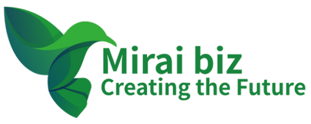

いつもお世話になっております。
株式会社みらい（Mirai biz）の石渡です。
これまで長年にわたり、保険業を通じてお付き合いいただき、本当にありがとうございました。本ページでは、これまでのお礼とあわせて、現在取り組んでいる仕事について簡単にご紹介させていただきます。
現在私は、企業や団体の業務整理や制作進行をサポートする「クラウドディレクター」という立場で活動しております。
クラウドディレクターとは、社長・責任者・担当者の仕事を整理し、外部の専門チームと連携しながら、業務や制作物が進みやすい形を整える役割です。現在は、主に次のようなご相談をいただいております。
たとえば、次のようなお悩みがある場合です。
こうした状況のときに、「何を社内で持ち、何を外部に任せるか」を整理しながら、進めやすい形を整えていきます。
制作や業務をただ外に出すというよりも、社内の大切な時間を生み出し、社長や責任者が本来やるべき仕事に集中できる状態づくりを目指しています。
会社概要や現在のサポート内容については、以下よりご覧いただけます。
もし今後、
「こういうことも頼めるのかな」
「少し整理したいことがある」
「忙しくて手が回らない部分がある」
といったことがありましたら、小さなことでもお気軽にご相談ください。
また、お時間のあるときに、ぜひ最近のご近況などもお聞かせいただけましたら嬉しく思います。
今後ともどうぞよろしくお願いいたします。
株式会社みらい（Mirai biz）
石渡 良一
Office：048-667-9000
Mobile：090-3408-1876
Mail：ryoichi.ishiwatari@miraibiz.jp